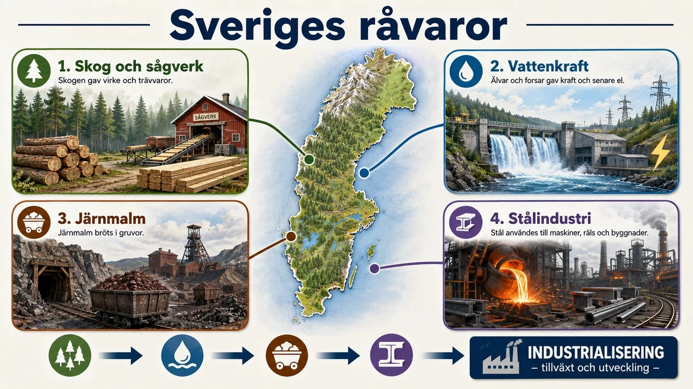
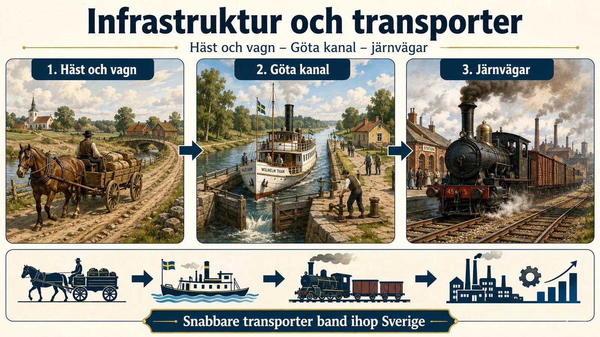
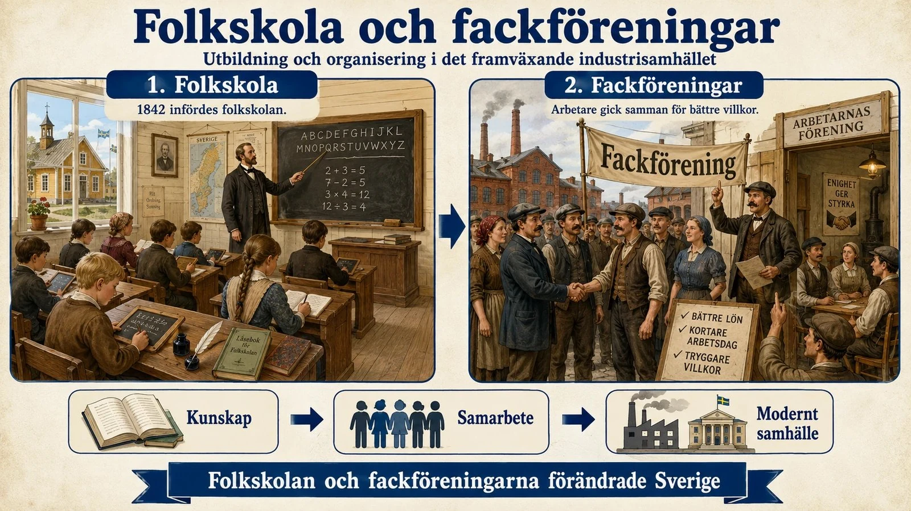
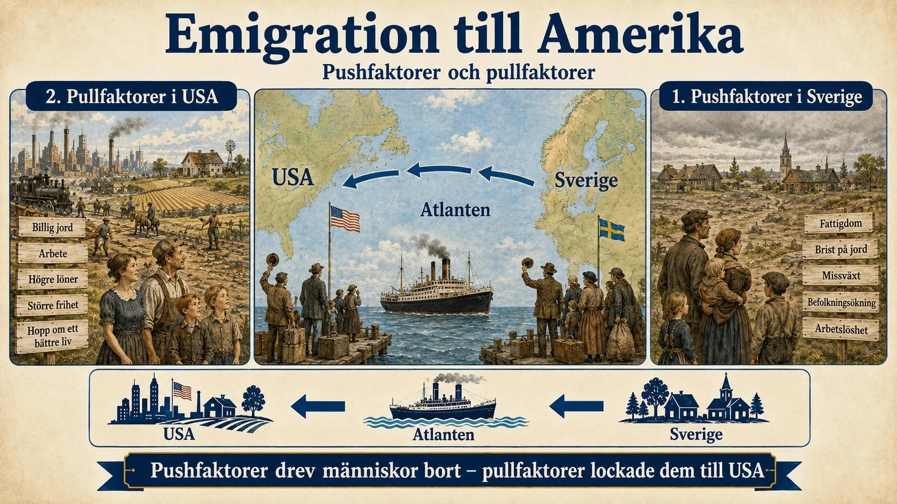

— från fattigt bondeland till modern industrination: skog, järn, järnväg, folkskola och emigration —
Före industrialiseringen var Sverige ett jordbrukssamhälle . De flesta människor bodde på landsbygden och levde av jordbruk. Livet var hårt. Dålig skörd kunde betyda brist på mat.
Genom skiftesreformer samlades böndernas små åkrar till större fält. Potatisen gav mycket mat på liten yta. När maten räckte till fler ökade befolkningen. Samtidigt behövdes färre i jordbruket. Många började söka arbete i sågverk, gruvor och fabriker.
Innan Sverige industrialiserades var landet framför allt ett jordbrukssamhälle . Det betyder att de flesta människor bodde på landsbygden och arbetade med jordbruk. Många familjer levde av det de själva odlade. Livet var ofta hårt och osäkert. Om skörden blev dålig kunde det bli brist på mat.
Under lång tid tillverkades också många saker i hemmen eller i små verkstäder. Kläder, redskap och andra varor producerades lokalt och i liten skala. Sverige hade visserligen järnbruk, hantverk och handel redan före industrialiseringen, men samhället var ännu inte ett industrisamhälle.
Under 1700- och 1800-talen förändrades jordbruket. En viktig förändring var skiftesreformerna . Tidigare hade böndernas åkrar delats upp i många smala tegar utspridda runt byn. Genom skiftena samlades marken i större sammanhängande åkrar — lättare att bruka mer effektivt.
Potatisen fick stor betydelse. Den gav stora skördar på liten yta och klarade kallare klimat. Växelbruk, bättre redskap och djuravel ökade produktionen ytterligare. Jordbruket hamnade i en positiv spiral.
När maten räckte till fler ökade Sveriges befolkning. Men det effektivare jordbruket innebar också att färre behövdes på åkrarna. Småbönder och torpare som inte längre hade plats sökte sig till städerna. Där växte sågverk, gruvor, järnbruk, fabriker och järnvägsbyggen. Industrialiseringen i Sverige hängde nära ihop med jordbrukets förändring — för fabriker och industrier att växa behövdes people som kunde arbeta där.
För att förstå Sveriges industrialisering måste man först se hur genomgripande jordbrukslandet Sverige var långt in på 1800-talet. Omkring 80–90 procent av befolkningen levde på landsbygden och arbetade med jordbruk. Sverige var fattigt, glesbefolkat och beroende av vad jorden gav — en missväxt kunde betyda svält. Ändå var det just förändringarna i detta jordbrukssamhälle som lade grunden för allt som skulle komma.
Två utvecklingar var avgörande. Den första var en rad jordbruksreformer, framför allt skiftena (som laga skifte 1827). Tidigare hade böndernas mark legat uppdelad i många små spridda tegar, insprängda mellan grannarnas, vilket gjorde brukandet ineffektivt. Genom skiftena samlades varje bondes jord till större sammanhängande enheter. Det gjorde jordbruket effektivare, ökade skördarna och gjorde det möjligt att föda fler människor — men det bröt också upp den gamla bygemenskapen och skapade tydligare skillnader mellan dem som ägde jord och dem som inte gjorde det.
Den andra utvecklingen var en kraftig befolkningsökning. Sveriges folkmängd växte snabbt under 1800-talets första hälft, och samtidens förklaring brukar sammanfattas med orden "freden, vaccinet och potäterna": en lång period av fred, vaccinet mot smittkoppor som minskade barnadödligheten, och potatisen som gav mycket näring per odlad yta. Fler barn överlevde till vuxen ålder.
Här ligger den avgörande kopplingen. Ett effektivare jordbruk kunde föda en växande befolkning — men det behövde inte fler händer, utan färre. Resultatet blev en snabbt växande grupp människor på landsbygden som inte hade egen jord att bruka: statare, torpare, backstugusittare och egendomslösa. Denna överskottsbefolkning blev en enorm reserv av arbetskraft som var beredd att söka sig någon annanstans — till städerna, till de framväxande fabrikerna, eller ända bort till Amerika. Jordbrukssamhället skapade alltså, nästan omärkligt, förutsättningen för sin egen förvandling.
Sverige industrialiserades senare än Storbritannien men hade viktiga råvaror: skog , järnmalm och vattenkraft . Sverige saknade stenkol, så industrialiseringen såg annorlunda ut.
Under 1800-talet behövde Europa mycket trä. Sverige hade stora skogar i Norrland. Timmer flottades på älvarna till sågverk vid kusten. Trävaror exporterades till hela Europa. Ur järn- och stålindustrin växte verkstadsindustrin fram.

Sverige industrialiserades senare än Storbritannien, men landet hade flera viktiga resurser. De viktigaste var skog , järnmalm och vattenkraft . Sverige hade däremot inte lika mycket stenkol som Storbritannien. Därför såg Sveriges industrialisering delvis annorlunda ut.
Under 1800-talet ökade efterfrågan på trä i Europa. Många länder byggde städer, järnvägar, fabriker och gruvor — de behövde virke. Sverige hade stora skogar, särskilt i Norrland, och kunde sälja trävaror till andra länder. Längs Norrlands älvar och kuster växte sågverksindustrin fram. Timmer flottades på älvarna ner till kusten. Sågverk och hamnar tog emot det. Skogen var en av Sveriges viktigaste vägar in i industrialiseringen.
Sverige hade länge haft järnbruk. Under industrialiseringen utvecklades järn- och stålproduktionen vidare. Järn och stål behövdes i det moderna samhället: till maskiner, verktyg, räls, broar, fartyg och fabriker. Ur järn- och stålindustrin växte verkstadsindustrin fram. Den blev viktig eftersom ett industrisamhälle hela tiden behövde nya maskiner och bättre teknik.
Vattenkraft var också avgörande. Sverige saknade kol men hade gott om strömmande vatten i älvar och forsar. Vattenkraften drev fabriker och senare genererade den elektricitet. Det är en av anledningarna till att Sveriges industrialisering inte kopierade Storbritanniens utan tog en delvis egen väg — baserad på inhemska naturresurser istället för importerat kol.
Sveriges industrialisering skiljer sig på en viktig punkt från den brittiska: den drevs från början inte främst av en hemmamarknad, utan av export av råvaror. Sverige hade inte kol och bomull som England, men det hade två andra tillgångar i överflöd — skog och järnmalm — och det var efterfrågan från det redan industrialiserade Europa som satte fart på svensk industri. Sverige industrialiserades alltså delvis genom att förse andras fabriker med råvaror.
Det intressanta med den här exportdrivna modellen är dess dubbelhet. Å ena sidan gav den Sverige kapital, arbetstillfällen och en väg in i den moderna industriella ekonomin. Å andra sidan gjorde den landet beroende av konjunkturerna på världsmarknaden: när efterfrågan på virke eller järn sjönk ute i Europa drabbades svenska bruk och sågverk hårt. Sverige hade knutit sitt öde till en internationell ekonomi det inte självt kunde styra — en tidig och viktig lärdom om vad det innebär att vara en liten, exportberoende nation.
En viktig förändring var järnvägen . Den gjorde transporter snabbare och billigare. Råvaror kunde fraktas till fabriker och varor skickas till kunder. Järnvägen är ett exempel på infrastruktur — sådant som gör att ett samhälle fungerar.
När industrier och järnvägar växte flyttade fler människor till städerna — urbanisering . Men livet i staden var svårt. Många bodde trångt och själdomar spreds lätt.

En av de viktigaste förändringarna under Sveriges industrialisering var järnvägen . Fore järnvägen var transporter ofta långsamma och dyra. Varor fick fraktas med häst och vagn, med båt eller på enkla vägar.
När järnvägen byggdes förändrades detta. Råvaror som trä, järnmalm och spannmål kunde transporteras snabbare och billigare. Fabriker fick de material de behövde, och färdiga varor skickades vidare. Järnvägen är ett exempel på infrastruktur — sådant som gör att samhället fungerar.
När industrier, sågverk, järnvägar och verkstäder växte fram började fler flytta från landsbygden till städer och industriorter. Stockholm, Göteborg, Malmö och Norrköping växte, men även mindre orter som Sundsvall och Boden om det fanns industrier där.
För många innebar flytten till staden nya möjligheter: arbete, lön och ett annat liv. Men livet i städerna var ofta svårt. Många bodde trångt, hygienen var dålig och sjukdomar spreds lätt. Arbetsdagarna var långa och lönerna låga. Industrialiseringen skapade alltså både utveckling och nya problem — precis som i övriga Europa.
Om råvarorna var bränslet i den svenska industrialiseringen, var järnvägen motorn som band ihop allt. Från mitten av 1800-talet byggde staten ut ett nät av stambanor genom landet, och betydelsen kan knappast överskattas. I ett avlångt, glesbefolkat land som Sverige hade avstånden tidigare varit ett nästan oöverstigligt hinder. Järnvägen krympte landet: råvaror kunde fraktas billigt från inlandet till kusten och ut i världen, färdiga varor kunde nå nya marknader, och människor kunde flytta dit arbetet fanns.
Järnvägen skapade dessutom industri i sig själv — den krävde järn, stål, verkstäder och lok, vilket i sin tur gav arbete och drev på den inhemska tillverkningen. Runt stationer och fabriker växte nya samhällen fram, och de gamla städerna svällde. Urbaniseringen tog fart: människor flyttade från landsbygden in till städerna i en takt Sverige aldrig tidigare upplevt. Stockholm, Göteborg och en rad industriorter växte snabbt.
Men den här flytten in till städerna hade ett högt pris, och det är den baksidan fördjupningen vill lyfta fram. De som lämnade landsbygden för fabriksarbetet mötte ofta miserabla villkor: långa arbetsdagar, låga löner, farliga maskiner och trångboddhet i snabbt uppförda arbetarkvarter där sjukdomar spreds lätt. Barnarbete förekom. Den gamla landsbygdens fattigdom hade varit hård, men i städerna tog fattigdomen en ny, koncentrerad och synlig form.
Det är denna spänning som gör industrialiseringens genombrott så motsägelsefullt. Samma utveckling som skapade rikedom, framsteg och nya möjligheter skapade också en ny sorts utsatthet. Sverige blev rikare som land samtidigt som en stor grupp arbetare levde under svåra villkor. Och just den motsättningen — mellan det växande välståndet och arbetarnas verklighet — skulle bli den kraft som väckte nästa stora förändring: arbetarnas krav på att organisera sig och förändra sina villkor.
När Sverige industrialiserades behövdes mer kunskap. År 1842 infördes folkskolan . Fler människor fick grundläggande kunskaper och kunde ta del av nyheter och idéer. Det hängde ihop med både industrialiseringen och demokratiseringen .
Industrialiseringen skapade en större arbetarklass . Arbetsvillkoren var hårda. Därför bildade arbetare fäckföreningar och krävde bättre lön, kortare dagar och säkrare arbetsmiljö. Det blev grunden för Sveriges demokratisering.

När Sverige industrialiserades förändrades också behovet av kunskap. I det gamla jordbrukssamhället lärde sig barn mest genom att hjälpa till hemma. Men i ett industrisamhälle behövdes fler som kunde läsa, skriva och räkna. Fabriker, järnvägar, banker, handel och myndigheter krävde det.
År 1842 infördes folkskolan i Sverige. Det betydde att varje socken skulle ordna skola för barnen. Folkskolan var ett viktigt steg mot att fler fick grundläggande kunskaper. Det bidrog till att Sverige snabbt fick en relativt utbildad befolkning — vilket var en konkurrensfördel i industrialiseringen.
Industrialiseringen skapade en större arbetarklass. Arbetsvillkoren var ofta hårda. Därför organiserade sig arbetare i fackföreningar . Om en enskild arbetare klagade kunde arbetsgivaren lätt byta ut personen. Men om många gick samman blev de starkare.
Arbetarrörelsen handlade inte bara om arbetsplatser. Den handlade också om politisk makt. Många arbetare ville ha rösträtt. Därför blev arbetarrörelsen en viktig del av Sveriges demokratisering . Industrialiseringen förändrade alltså inte bara hur människor arbetade — den förändrade hur de såg på rättvisa, makt och inflytande.
Industrialiseringen förändrade inte bara hur Sverige producerade, utan också hur svenskarna tänkte och organiserade sig — och två utvecklingar var särskilt avgörande för vägen mot det moderna samhället: folkbildningen och arbetarrörelsen.
Det djupt intressanta är hur dessa trådar vävdes samman. Industrialiseringen skapade en stor arbetarklass; folkskolan gav den verktyg att tänka och organisera sig; och de eländiga villkoren gav den något att kämpa mot. Kampen handlade till en början om löner och arbetstid, men den vidgades snabbt till en fråga om rättigheter och inflytande i samhället i stort. På så sätt blev de sociala frågorna oskiljaktiga från de politiska — och pekade rakt mot nästa steg: kravet på demokrati.
Trots industrialiseringen var livet fortfarande svårt för många. Många levde fattigt och brist på jord och arbete drev människor att emigrera — flytta från Sverige till ett annat land. Den största gruppen flyttade till USA.
Push-faktorer driver bort människor: fattigdom, brist på jord, missväxt. Pull-faktorer lockar till ett annat land: jord, arbete, högre löner och frihet. Samtidigt fortsatte Sverige att förändras och blev steg för steg ett modernt industriland.

Trots att Sverige industrialiserades var livet fortfarande svårt för många under 1800-talet. Befolkningen hade ökat snabbt men det fanns inte alltid tillräckligt med jord, arbete eller framtidsmöjligheter. Därför valde många att emigrera — alltså flytta till ett annat land. Den största gruppen flyttade till USA.
Pushfaktorer är sådant som driver bort människor från ett land. I Sverige: fattigdom, brist på jord, missväxt och arbetslöshet.
Pullfaktorer är sådant som lockar till ett annat land. USA lockade med billig jord, arbete, högre löner och berättelser om större frihet. Brev från släktingar som redan emigrerat fick andra att följa efter.
Samtidigt som många emigrerade fortsatte Sverige att förändras. Industrin växte, järnvägar byggdes, städer blev större och fler fick utbildning. Sverige blev mer beroende av export och industriell produktion. Skog, järn, stål, verkstäder och senare elektricitet blev viktiga delar av landets ekonomi.
Sverige gick alltså steg för steg från att vara ett fattigt jordbrukssamhälle till att bli ett modernt industriland. Det betydde inte att alla fick det bättre direkt, men på längre sikt förändrades samhället mycket. Industrialiseringen lade grunden till mycket av det Sverige som växte fram under 1900-talet — ekonomisk tillväxt, teknisk utveckling, arbetarrörelse, demokratisering och ett starkare välfärdssamhälle.
Ingen enskild företeelse säger så mycket om det industrialiserande Sverige som den stora emigrationen. Mellan mitten av 1800-talet och 1930 lämnade omkring en miljon svenskar landet, de allra flesta för Nordamerika. För ett litet land var det en enorm åderlåtning — och den är nyckeln till att förstå både industrialiseringens plågor och dess möjligheter.
Emigrationen brukar förklaras med push- och pullfaktorer. Push-faktorerna var det som stötte bort människor från Sverige: fattigdom, jordbrist för den växande landsbygdsbefolkningen, missväxt och svältår (som slutet av 1860-talet), samt trångboddhet och hårda villkor. Pull-faktorerna var det som drog dem till Amerika: löften om billig eller gratis jord, högre löner, religionsfrihet och en känsla av att där fanns en framtid. Ofta samverkade de: den som saknade jord hemma lockades av att kunna bli självägande bonde på andra sidan Atlanten.
Emigrationen är därför ett tveeggat vittnesmål. Å ena sidan är den ett svidande bevis på industrialiseringens och jordbruksförändringarnas baksida: så många människor såg ingen framtid i sitt eget land att de vågade en farlig resa till en helt främmande kontinent. Å andra sidan tvingade den fram eftertanke hemma. Att landet blödde arbetskraft blev ett argument för reformer — bättre villkor, rösträtt, sociala förbättringar — för att ge människor skäl att stanna.
Och steg för steg förändrades Sverige. Ur jordbrukslandet, genom råvaruexport, järnväg, urbanisering, folkbildning och arbetarrörelse, växte vid 1900-talets början en modern industrination fram. Kampen för bättre arbetsvillkor gled över i kampen för demokrati, och under de första decennierna av 1900-talet infördes allmän och lika rösträtt — för män och sedan för kvinnor. Det är den långa linjen i hela detta tema: hur ett fattigt bondeland på mindre än ett sekel förvandlades till ett modernt, industrialiserat och så småningom demokratiskt samhälle. Industrialiseringen var inte bara maskiner och fabriker — den var, till syvende och sist, en förvandling av hela det svenska samhället och av vad det innebar att vara svensk.